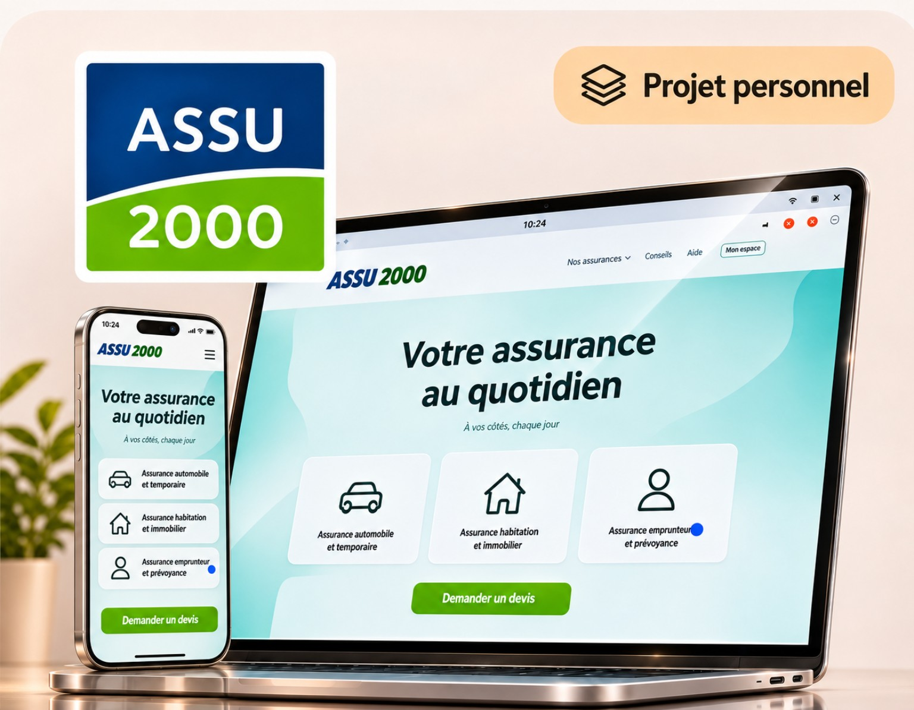

Projet personnel · UX/UI
Refonte mobile de l’espace client ASSU 2000
Une refonte personnelle pour rendre l’espace client plus lisible et faciliter l’accès aux contrats et aux documents. La maquette utilise des données fictives.
Voir l’aperçu ASSU 2000 →